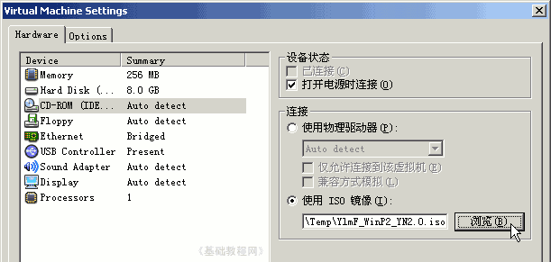

VMware 虚拟机基础入门教程
作者：TeliuTe 来源：基础教程网
三、编辑虚拟机 返回目录 下一课有时候我们需要重新设置虚拟机电脑，修改内存大小，增加硬盘，加载光盘软盘等，下面我们来看一个练习；
1、启动程序
1）打开自己的文件夹，打开VM文件夹，找到彩色的vm图标双击运行；
2）在出来的窗口左边，找到第二个“编辑虚拟机设置”，点击打开；
2、编辑虚拟机配置
1）第一项内存，如果内存太小，就在右边适当调大，注意别太大影响主机的运行；
2）接下来左边的Hard Disk是硬盘，一般不用修改，有时候可以再“添加”一块；
3）第三项是CD-ROM光驱，点击选中后右边出来选项，
默认是自动检测主机的光驱，如果你有XP的安装盘镜像(ISO文件)，可以点下面的“浏览”直接加载；

4）接下来的Floppy是软驱设置，同样可以设置.img镜像文件，注意启动顺序是按照软驱-硬盘-光驱的顺序；
；
设置软驱的目的是使用工具盘，来给新虚拟机磁盘分区，img映像文件可以在一键Ghost的安装文件夹里找着；
5）其他的设置一般不用修改，修改完成后点“OK”按钮确定，
这时如果立即启动虚拟机会出现一个错误提示，需要关闭程序后重新打开运行即可；
本节学习了编辑虚拟机配置的基本操作，如果你成功地 完成了练习，请继续学习下一课内容；本教程由86团学校TeliuTe制作|著作权所有
基础教程网：http://teliute.org
美丽的校园……
转载和引用本站内容，请保留作者和本站链接。